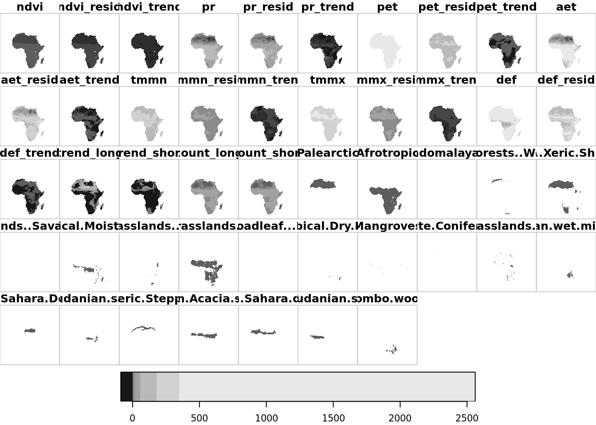

5 Environmental predictability & trends
We applied harmonic regression to datasets containing the following variables:
-
NDVINormalized Difference Vegetation Index from the GIMMS NDVI from AVHRR Sensors 3rd Generation dataset -
AETActual Evapotranspiration from the TerraClimate dataset -
PRPrecipitation accumulation from the TerraClimate dataset -
TMMXMaximum temperature from the TerraClimate dataset -
TMMNMinimum temperature from the TerraClimate dataset
All datasets contain monthly aggregates.
5.1 Combine environmental datasets, trend datasets and ecoregions
We need to combine the predictors (environmental factors) and response (assemblage trends) to a single dataset before modelling. We will also limit the data spatially by the outline of the African continent (including Madagascar).
africa_outline <- st_read("data/raw/Africa.gpkg")
lut <- readRDS("data/processed/ecoregions_lut.RDS")
load_raster <- function(rasterpath, bandnames) {
r <- stack(rasterpath)
if (!is.null(bandnames)) {
band_ids <- which(names(r) %in% bandnames)
lapply(band_ids, function(x) raster(rasterpath, band = x))
} else {
unstack(r)
}
}
ndvi <- load_raster("data/raw/gee/ndvi_1.tif", c("ndvi_original", "residuals", "slope"))
pr <- load_raster("data/raw/gee/pr_1.tif", c("pr_original", "residuals", "slope"))
pet <- load_raster("data/raw/gee/pet_1.tif", c("pet_original", "residuals", "slope"))
aet <- load_raster("data/raw/gee/aet_1.tif", c("aet_original", "residuals", "slope"))
tmmn <- load_raster("data/raw/gee/tmmn_1.tif", c("tmmn_original", "residuals", "slope"))
tmmx <- load_raster("data/raw/gee/tmmx_1.tif", c("tmmx_original", "residuals", "slope"))
def <- load_raster("data/raw/gee/def_1.tif", c("def_original", "residuals", "slope"))
realms <- load_raster("data/processed/realms.tif", NULL)
biomes <- load_raster("data/processed/biomes.tif", NULL)
ecoregions <- load_raster("data/processed/ecoregions.tif", NULL)
trend_long_assemblage <- raster::raster("data/processed/trend_long_assemblage.tif")
trend_short_assemblage <- raster::raster("data/processed/trend_short_assemblage.tif")
trend_long_counts <- raster::raster("data/processed/trend_long_counts.tif")
trend_short_counts <- raster::raster("data/processed/trend_short_counts.tif")
bandnames <- c("ndvi", "ndvi_resid", "ndvi_trend", "pr", "pr_resid", "pr_trend", "pet", "pet_resid", "pet_trend",
"aet", "aet_resid","aet_trend", "tmmn", "tmmn_resid", "tmmn_trend", "tmmx", "tmmx_resid", "tmmx_trend",
"def", "def_resid", "def_trend", "trend_long", "trend_short", "count_long", "count_short",
lut$realms, lut$biomes, lut$ecoregions)
data <- suppressWarnings(brick(c(ndvi, pr, pet, aet, tmmn, tmmx, def, trend_long_assemblage, trend_short_assemblage,
trend_long_counts, trend_short_counts, realms, biomes, ecoregions)))
names(data) <- bandnames
data_stars <- st_as_stars(data)[africa_outline] %>%
st_set_dimensions(3, values = bandnames) %>%
st_set_dimensions(names = c("x", "y", "var"))## although coordinates are longitude/latitude, st_intersects assumes that they are planar## Reading layer `Africa-Dissolved' from data source `/mnt/envirpred/raw/Africa.gpkg' using driver `GPKG'
## Simple feature collection with 1 feature and 2 fields
## geometry type: MULTIPOLYGON
## dimension: XY
## bbox: xmin: -25.3618 ymin: -50.01889 xmax: 77.60327 ymax: 37.55986
## CRS: 4326To confirm that worked, let’s plot the output.
plot(data_stars)
5.2 Save modeling dataset
We will now save the stars brick and a dataframe for modeling.
saveRDS(data_stars, file = "data/processed/data_stars.RDS")
as.data.frame(data_stars) %>%
`colnames<-`(c("x", "y", "variable", "value")) %>%
pivot_wider(names_from = variable, values_from = value) %>%
drop_na(!any_of(c(lut$ecoregions, lut$realms, lut$biomes))) %>%
identity() -> data
saveRDS(data, file = "data/processed/data.RDS")